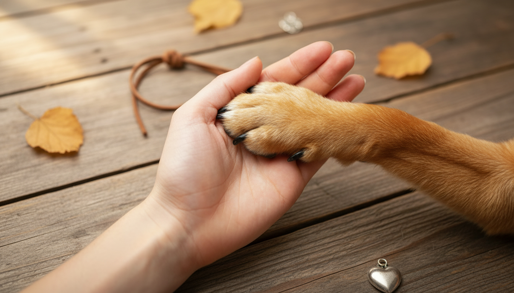

Asà se ve el fondo nuevo en la página de perdidas: huellitas, huesitos, ovillo de lana y pescado en naranja suave al 10% de opacidad sobre el fondo crema.

zona saladillo · hace 2 horas
barrio centro · hace 1 dÃa
plaza central · hace 3 dÃas